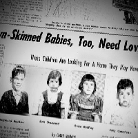
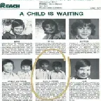
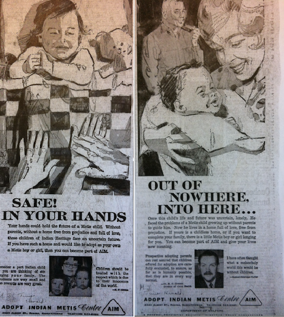
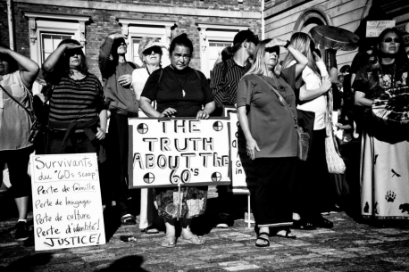
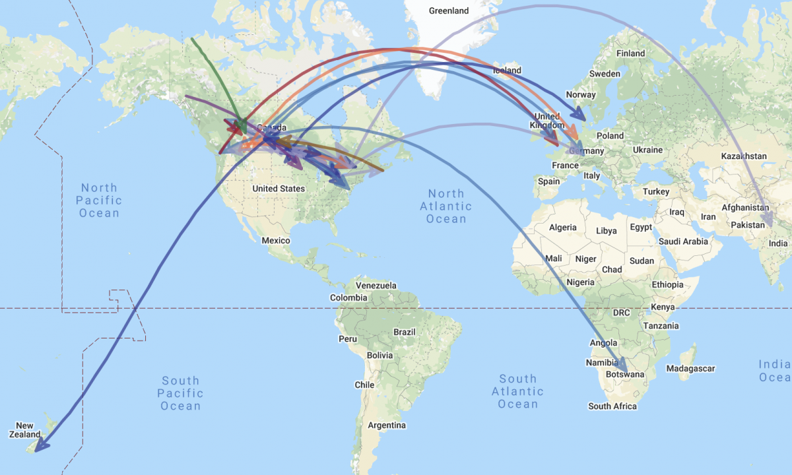
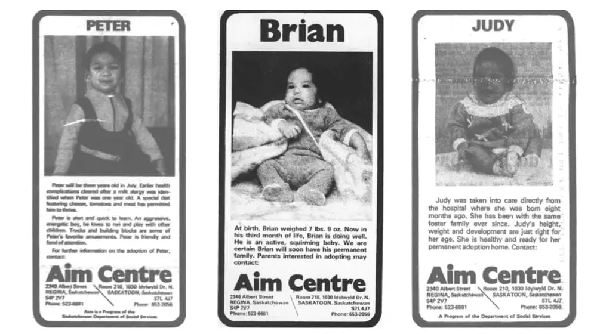

A newspaper ad in the 1960's advertising the adoption of "brown-skinned" Indigenous children to be later adopted by Canadian families.

A newspaper advertisement by AIM displaying children set up for adoption, in the 1960s.

Newspaper advertisements for the Adopt Indian and Métis Program, late 1960s, Saskatchewan.

A congregation of protestors seeking justice for the Sixties (60's) Scoop.

A map displaying the various locations at which the adoptees of the Sixties Scoop were transported. It pinpoints places located in Europe, Asia, North America, Africa, and New Zealand.

An advertisement by the AIM (Adopt Indian and Metis) program showcasing various Indigenous kids.